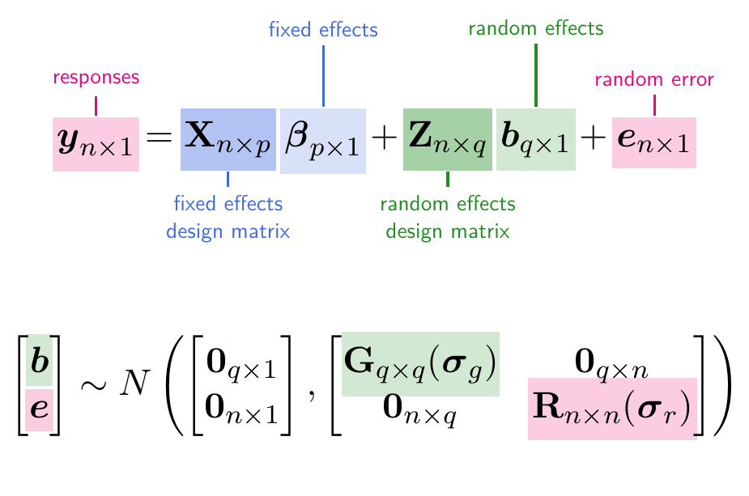

Australian National University
2025-07-14
A general form for the linear mixed model is given by

\mathbf{G} = \oplus^{n_b}_{i=1} \mathbf{G}_i = \begin{bmatrix} \mathbf{G}_1 & \mathbf{0} & \cdots & \mathbf{0} \\ \mathbf{0} & \mathbf{G}_2 & \cdots & \mathbf{0} \\ \vdots & \vdots & \ddots & \vdots \\ \mathbf{0} & \mathbf{0} &\cdots & \mathbf{G}_{n_b} \\ \end{bmatrix} .
\mathbf{R} = \oplus_{j=1}^{n_e} \mathbf{R}_j = \begin{bmatrix} \mathbf{R}_1 & \mathbf{0} & \dots & \mathbf{0} \\ \mathbf{0} & \mathbf{R}_2 & \dots & \mathbf{0} \\ \vdots & \vdots & \ddots & \vdots \\ \mathbf{0} & \mathbf{0} & \dots & \mathbf{R}_{n_e} \end{bmatrix}
where \oplus is the direct sum operator.
Correlation
Homogeneous
Heterogeneous
asremlDefault
id() = \mathbf{I}_n
idv() = \sigma^2\mathbf{I}_n
idh()
= \begin{bmatrix}\sigma^2_1 & 0 & \cdots & 0 \\ 0 & \sigma^2_2 & \ddots & \vdots\\ \vdots & \ddots & \ddots & 0 \\ 0 & \cdots & 0 & \sigma^2_n \end{bmatrix}
Time series
ar1(), ar2(), ar3(), sar(), sar2(), ma1(), ma3(), arma()
v or h to convert correlation model to homogeneous or heterogeneous models.ar1v() or ar1h()Metric-based
exp(), gau(), lvr(), iexp(), igau(), ieuc(), sph(), cir(), aexp(), agau(), mtrn()
v or h to convert correlation model to homogeneous or heterogeneous models.General structures
cor(), corb(), corg(), diag(), us(), chol(), cholc(), ante(), sfa(), fa(), facv(), rr()
cor(), corb(), and corg(), suffix name with v or h to convert correlation model to homogeneous or heterogeneous models.idh() \equiv diag() and corgh() \equiv us(), but default starting values or computation under the hood may differ.idv(col):idv(row).asreml. E.g. idv(col):id(row).asreml. This is referred to as the gamma parameterization in asreml. E.g. id(col):id(row).library(asreml)
# gamma parameterization.
fiti <- asreml(yield ~ 1,
random =~ Variety,
residual =~ id(column):id(row),
data = naf)
# sigma parameterization
fitv <- asreml(yield ~ 1,
random =~ Variety,
residual =~ idv(column):id(row),
data = naf)
# sigma parameterization
fith <- asreml(yield ~ 1,
random =~ Variety,
residual =~ idh(column):id(row),
data = naf)Below cannot be fitted.
# A tibble: 2 × 5
term estimate std.error statistic constraint
<chr> <dbl> <dbl> <dbl> <chr>
1 Variety 0.0860 0.0303 2.84 P
2 column:row!R 0.102 0.0220 4.63 P # A tibble: 3 × 5
term estimate std.error statistic constraint
<chr> <dbl> <dbl> <dbl> <chr>
1 Variety 0.0860 0.0303 2.84 P
2 column:row!column 0.102 0.0220 4.63 P
3 column:row!R 1 NA NA F # A tibble: 14 × 5
term estimate std.error statistic constraint
<chr> <dbl> <dbl> <dbl> <chr>
1 Variety 0.0543 0.0181 3.00 P
2 column:row!R 1 NA NA F
3 column:row!column_1 0.0225 0.0199 1.13 P
4 column:row!column_2 0.0153 0.00982 1.56 P
5 column:row!column_3 0.0267 0.0201 1.32 P
6 column:row!column_4 0.146 0.0738 1.97 P
7 column:row!column_5 0.226 0.100 2.25 P
8 column:row!column_6 0.0240 0.0179 1.34 P
9 column:row!column_7 0.326 0.142 2.30 P
10 column:row!column_8 0.0939 0.0503 1.87 P
11 column:row!column_9 0.220 0.102 2.15 P
12 column:row!column_10 0.0788 0.0435 1.81 P
13 column:row!column_11 0.116 0.0639 1.82 P
14 column:row!column_12 0.292 0.131 2.23 P Best linear unbiased estimates (BLUEs)
\hat{\boldsymbol{\beta}} = (\mathbf{X}^\top\mathbf{V}^{-1}\mathbf{X})^{-1}\mathbf{X}^\top\mathbf{V}^{-1}\boldsymbol{y}
Best linear unbiased predictions (BLUPs)
\tilde{\boldsymbol{b}} = \mathbf{G}\mathbf{Z}^\top\mathbf{P}\boldsymbol{y} = \mathbf{G}\mathbf{Z}^\top\mathbf{V}^{-1}(\boldsymbol{y} - \mathbf{X}\hat{\boldsymbol{\beta}})
By asreml
# A tibble: 1 × 3
term estimate std.error
<chr> <dbl> <dbl>
1 (Intercept) 1470. 26.6# A tibble: 25 × 3
term estimate std.error
<chr> <dbl> <dbl>
1 Variety_1 -156. 67.3
2 Variety_2 20.8 67.3
3 Variety_3 -7.78 67.3
4 Variety_4 -26.3 67.3
5 Variety_5 -18.2 67.3
6 Variety_6 4.43 67.3
7 Variety_7 -42.2 67.3
8 Variety_8 45.6 67.3
9 Variety_9 -92.2 67.3
10 Variety_10 -161. 67.3
# ℹ 15 more rowsBy “hand”
vars <- tidy(fits, "varcomp")$estimate
G <- vars[1] * diag(nlevels(shf$Variety))
R <- vars[2] * diag(nrow(shf))
Z <- model.matrix(~Variety - 1, data = shf)
X <- matrix(1, nrow = nrow(shf))
V <- Z %*% G %*% t(Z) + R
y <- shf$yield
(BLUE <- solve(t(X) %*% solve(V) %*% X) %*% t(X) %*% solve(V) %*% y) [,1]
[1,] 1470.44 [,1]
[1,] -156.452173
[2,] 20.841535
[3,] -7.779433
[4,] -26.339105
[5,] -18.231459
[6,] 4.430877
[7,] -42.163667
[8,] 45.652885
[9,] -92.177099
[10,] -161.238614
[11,] -66.388923
[12,] 7.849764
[13,] 92.247430
[14,] -54.569343
[15,] -14.714889
[16,] -6.997973
[17,] 22.892867
[18,] 87.167941
[19,] 101.038854
[20,] 144.116829
[21,] -27.804342
[22,] 106.118343
[23,] -78.696916
[24,] 43.113141
[25,] 78.083470\begin{align*} l &= \log f(\boldsymbol{y}, \boldsymbol{b} ; \boldsymbol{\sigma})\\ &= \log f(\boldsymbol{y}|\boldsymbol{b};\boldsymbol{\sigma}_r) + \log f(\boldsymbol{b};\boldsymbol{\sigma}_g) \\ &= -\frac{1}{2}\log |\mathbf{R}| - \frac{1}{2}(\boldsymbol{y}-\mathbf{X}\boldsymbol{\beta}-\mathbf{Z}\boldsymbol{b})^\top \mathbf{R}^{-1}(\boldsymbol{y}-\mathbf{X}\boldsymbol{\beta}-\mathbf{Z}\boldsymbol{b}) \\ & \qquad - \frac{1}{2}\log|\mathbf{G}| - \frac{1}{2} \boldsymbol{b}^\top\mathbf{G}^{-1}\boldsymbol{b} - \frac{n+q}{2}\log 2\pi. \end{align*}
\begin{align*} \frac{\partial \ell}{\partial\boldsymbol{\beta}} &= \mathbf{X}^\top \mathbf{R}^{-1}(\boldsymbol{y} - \mathbf{X}\boldsymbol{\beta} - \mathbf{Z}\boldsymbol{b}) = \boldsymbol{0} \\ \frac{\partial \ell}{\partial\boldsymbol{b}} &= \mathbf{Z}^\top \mathbf{R}^{-1}(\boldsymbol{y} - \mathbf{X}\boldsymbol{\beta} - \mathbf{Z}\boldsymbol{b}) - \mathbf{G}^{-1} \boldsymbol{u}= \boldsymbol{0}. \end{align*}
Rearranging the above results in the mixed model equations:
\underbrace{\begin{bmatrix} \mathbf{X}^\top \mathbf{R}^{-1}\mathbf{X} & \mathbf{X}^\top \mathbf{R}^{-1}\mathbf{Z} \\ \mathbf{Z}^\top \mathbf{R}^{-1}\mathbf{X} & \mathbf{Z}^\top \mathbf{R}^{-1}\mathbf{Z} + \mathbf{G}^{-1} \\ \end{bmatrix}}_{\normalsize\mathbf{C}} \begin{bmatrix} \hat{\boldsymbol{\beta}} \\ \tilde{\boldsymbol{b}} \end{bmatrix} = \begin{bmatrix} \mathbf{X}^\top\mathbf{R}^{-1}\boldsymbol{y}\\ \mathbf{Z}^\top\mathbf{R}^{-1}\boldsymbol{y} \end{bmatrix}
Solving this results in the same BLUE and BLUP as before.
Variance of prediction errors
\text{var}\left(\begin{bmatrix}\hat{\boldsymbol{\beta}} - \boldsymbol{\beta}\\\tilde{\boldsymbol{b}} - \boldsymbol{b}\end{bmatrix}\right) = \mathbf{C}^{-1} = {\scriptsize\begin{bmatrix}(\mathbf{X}^\top\mathbf{V}^{-1}\mathbf{X})^{-1} & -(\mathbf{X}^\top\mathbf{V}^{-1}\mathbf{X})^{-1}\mathbf{X}^\top\mathbf{V}^{-1}\mathbf{Z}\mathbf{G}\\ -\mathbf{G}\mathbf{Z}^\top\mathbf{V}^{-1}\mathbf{X}(\mathbf{X}^\top\mathbf{V}^{-1}\mathbf{X})^{-1} & \mathbf{G} - \mathbf{G}\mathbf{Z}^\top\mathbf{P}\mathbf{Z}\mathbf{G} \end{bmatrix}}
ML
\begin{align*} \hat{\boldsymbol{\sigma}}_{\text{ML}} &= \operatorname*{arg\,max}_{\boldsymbol{\sigma}} f(\boldsymbol{y}; \boldsymbol{\sigma})\\ &= \operatorname*{arg\,max}_{\boldsymbol{\sigma}}~ \log f(\boldsymbol{y}; \boldsymbol{\sigma})\\ &= \operatorname*{arg\,max}_{\boldsymbol{\sigma}}~ -\frac{1}{2}\left( \log |\mathbf{V}| + (\boldsymbol{y} - \mathbf{X}\hat{\boldsymbol{\beta}})^\top\mathbf{V}^{-1}(\boldsymbol{y} - \mathbf{X}\hat{\boldsymbol{\beta}})\right) \end{align*}
REML
\begin{align*} \hat{\boldsymbol{\sigma}}_{\text{REML}} &= \operatorname*{arg\,max}_{\boldsymbol{\sigma}} \ell_R(\boldsymbol{\sigma}) \quad(\textbf{residual log-likelihood})\\ &= \operatorname*{arg\,max}_{\boldsymbol{\sigma}}~ -\frac{1}{2}\left( \log |\mathbf{V}| + {\color{RoyalBlue} \log|\mathbf{X}^\top\mathbf{V}^{-1}\mathbf{X}|} + (\boldsymbol{y} - \mathbf{X}\hat{\boldsymbol{\beta}})^\top\mathbf{V}^{-1}(\boldsymbol{y} - \mathbf{X}\hat{\boldsymbol{\beta}})\right)\\ &= \operatorname*{arg\,max}_{\boldsymbol{\sigma}}~ -\frac{1}{2}\left(\log |\mathbf{G}| + \log |\mathbf{R}| + \log |\mathbf{C}| + \boldsymbol{y}^\top\mathbf{P}\boldsymbol{y}\right) \end{align*}
REML score equations
REML estimates for \boldsymbol{\sigma}_{m\times1} = (\sigma_1, \dots, \sigma_m)^\top are obtained by solving s_i(\boldsymbol{\sigma}) = \frac{\partial\ell_R(\boldsymbol{\sigma})}{\partial \sigma_i} = 0 \quad\text{for } i = 1, \dots, m.
We solve numerically using a Newton-Raphson algorithm: \boldsymbol{\sigma}^{(t + 1)} = \boldsymbol{\sigma}^{(t)} + \left({\color{RoyalBlue}\mathcal{J}(\boldsymbol{\sigma}^{(t)}})\right)^{-1}\boldsymbol{s}(\boldsymbol{\sigma}^{(t)}) where
Let \mathbf{V}'_i = \frac{\partial \mathbf{V}}{\partial \sigma_i} and \mathbf{V}''_i = \frac{\partial^2 \mathbf{V}}{\partial \sigma_i\partial \sigma_j}.
Observed information matrix
\mathcal{J}_{ij} = \frac{1}{2}\text{tr}(\mathbf{P}\mathbf{V}''_{ij}) - \frac{1}{2}\text{tr}(\mathbf{P}\mathbf{V}_{i}'\mathbf{P}\mathbf{V}_j') + \boldsymbol{y}\mathbf{P}\mathbf{V}'_i\mathbf{P}\mathbf{V}_j'\mathbf{P}\boldsymbol{y}-\frac{1}{2}\boldsymbol{y}^\top\mathbf{P}\mathbf{V}''_{ij}\mathbf{P}\boldsymbol{y}
Expected information matrix (Fisher information)
\mathcal{I}_{ij} = E(\mathcal{J}_{ij}) = \frac{1}{2}\text{tr}(\mathbf{P}\mathbf{V}_{i}'\mathbf{P}\mathbf{V}_j')
Average information matrix
\mathcal{A}_{ij} = \frac{1}{2}\boldsymbol{y}\mathbf{P}\mathbf{V}'_i\mathbf{P}\mathbf{V}_j'\mathbf{P}\boldsymbol{y} = \frac{1}{2}(\mathcal{J}_{ij} + \mathcal{I}_{ij})\quad\text{assuming }\boldsymbol{y}^\top\mathbf{P}\mathbf{V}''_{ij}\mathbf{P}\boldsymbol{y} = \text{tr}(\mathbf{P}\mathbf{V}''_{ij})
Start with initial estimate of \boldsymbol{\sigma} = \boldsymbol{\sigma}^{(0)}.
For t = 1, \dots, \texttt{maxit},